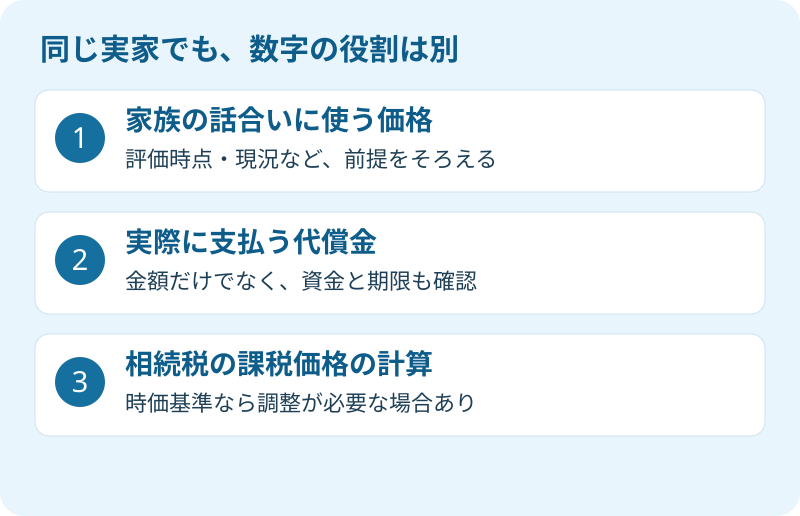

実家は一人が引き継ぎ、ほかのきょうだいには現金を払う。家を残せる方法ですが、「家はいくらとして計算するのか」で話が止まります。固定資産税の通知書、不動産会社の査定書、相続税申告の資料が机に並んでも、目的を分けなければ数字は比べられません。
大石浩之（磐田市／不動産業）です。宅地建物取引士として私が整理したいのは、高い評価と低い評価のどちらを選ぶかより、その数字で何を決めるのかです。2026年9月20日に確認した一次情報をもとに、代償金の話合いと税務計算を分けます。個別の遺産分割や税額は、専門家に確認を。
代償金の話合いと相続税の計算は、目的が違う
国税庁No.4173は、代償分割を、相続財産を現物で取得する人が、ほかの共同相続人などに対して債務を負担する分け方と説明しています。実家を取得する人がきょうだいへ現金を払う形は、その一例です。家を売って代金を分ける換価分割とは区別します。
この記事でいう時価は、通常の取引で成立すると考えられる価額です。相続税評価額は、相続税を計算するための評価額です。国税庁の資料は、代償分割時の通常の取引価額を基準に代償金を決めた場合と、相続開始時の相続税評価額との関係を示しています。価格の目的に加え、時点も違う場合があります。
| 区別する数字 | 何のために使うか | 確認すること |
|---|---|---|
| 話合いに使う時価 | 実家の価値を考える材料 | いつの価格か、現況か、更地を想定するか |
| 合意する代償金 | ほかの相続人へ負担する支払い | 取得財産、金額、支払期限、資金 |
| 相続税評価額 | 相続税の課税価格を計算する基礎 | 評価の対象と相続開始時点、適用条件 |
私は、家を残したい人と現金を受け取りたい人の希望を、一つの分け方で調整できる点を評価します。ただし、「税務の資料に載っているから家族も納得するはず」とは考えません。公的な計算のための数字であることと、家族がその金額で合意できることは別です。
不動産会社の査定も、合意を強制する答えではありません。査定と鑑定評価の役割は、磐田の実家の査定・鑑定評価の違いで整理しています。相続人間の対立がある場合は、価格資料を出し合う前に、弁護士へ相談する選択もあります。
払う2,000万円と、税務上の1,600万円
国税庁No.4173には、相続税評価額4,000万円、代償分割時の時価5,000万円の土地を取得し、ほかの相続人へ現金2,000万円を支払う例があります。その2,000万円を時価5,000万円を基に決めた場合、税務上の代償財産の価額を調整する計算が示されています。
計算は、2,000万円×（4,000万円÷5,000万円）＝1,600万円です。この条件では、土地を取得した人の課税価格は4,000万円−1,600万円＝2,400万円。代償金を受け取った人の課税価格は1,600万円となります。これは同庁の説明用の事例で、磐田の物件相場でも、個別の申告結果でもありません。
ここで実際の送金額2,000万円が、1,600万円に減るわけではありません。調整されるのは相続税の計算に用いる価額です。払う金額と税務上の計算額を、一枚の表で同じ欄に入れない。私は家族へ説明するなら、まずこの区別を置きます。
税務の詳細は税理士に任せるとしても、依頼者が残す資料はあります。何の財産を対象にしたか、代償金をどの価額を基に決めたか、その評価の時点はいつか。この情報を査定書や話合いの記録と一緒に渡します。国税庁は条件別の計算を示しており、すべての代償金へ同じ比率を機械的に掛けるものではありません。申告への適用は専門家に確認を。

2025年司法統計の5,778件は、全相続の割合ではない
最高裁判所の2025年司法統計年報・家事編69頁、第54表では、遺産分割事件の認容・調停成立件数の総数は8,347件です。「分割をしない」事件を除く集計で、「その他」は5,778件。脚注は、表の分割方法に代償金支払いの定めを加えたものと説明しています。
この表から、家や土地をどう分けるかに加えて、金銭の支払いを組み合わせた事件があると確認できます。ただし、家庭裁判所で扱った一定の事件の統計です。全国の相続すべての選択割合でも、実家を単独相続した家族の割合でもありません。表には相続人の分割方法に関する重複計上の注意もあります。
私は、この統計を「代償分割が普通だから選ぶべきだ」という営業の材料にはしません。家を取得する側から見れば、家の評価がついても、その金額が口座に入るわけではないからです。必要なのは件数の大きさより、支払う現金を用意できるかという一世帯の問題です。
年報の対象年は2025年で、PDFの序文には2026年6月とあります。正確な公表日は今回確認できていません。「2026年9月に公表された統計」とは扱わず、2026年9月20日に原文を確認した資料として使っています。
磐田・袋井で査定を頼むなら、価格の条件をそろえる
磐田・袋井の実家を代償分割の検討用に査定するなら、売却予定の有無と利用目的を最初に伝えます。私は、同じ家について複数の価格を比べる前に、土地と建物の範囲、評価時点、残置物、境界、道路の条件をそろえるよう案内します。
依頼文は「実家を一人が取得する案を検討しています。売出価格を決める前段階で、代償金の話合いに使う価格資料が必要です。現況の建物付きで、評価時点と査定根拠を示してください」と書けます。これは依頼文の例です。売る予定が未定なのに、売却を決めたように伝える必要はありません。
建物付きの現況査定と、解体後の更地を想定した査定は、そのまま横に並べられません。解体費や測量費を誰が負担する想定かも違います。私は、価格の差をすぐに業者の優劣にせず、まず「何を前提にした価格か」の説明を求めます。根拠資料がない高値だけでは、家族間の話合いに使いにくいからです。
私はこう考えます。査定額を家族に見せる前に、誰がいくら払えるかも確かめるべきです。家を残せる案には良さがあります。それでも、代償金を払い終えた後の生活資金が尽きる計画は勧められません。私自身、家への思いと支払いの現実のどちらを先に話すかは迷います。だから、希望を聞く欄と資金を書く欄を分け、同じ相談で両方を確認します。
支払資金が整わない場合には、売却して分ける換価分割の段取りも比較対象です。一方、結論を先送りするためだけに名義を共有にするなら、実家を共有名義にするときの確認事項を読んでから、専門家と将来の処分方法を相談してください。どの分け方が適切かは、遺産全体と家族の事情で変わります。
今日の一歩は、価格を決める前の依頼文を作る
代償分割を検討する家族が今日できるのは、査定の利用目的と未確認事項を一枚にまとめることです。金額の結論をその日のうちに出す必要はありません。「時価」「代償金」「相続税評価額」という見出しを分けるだけでも、相談先に伝わる内容が変わります。
- 登記事項や手元の図面を用意し、査定対象の土地・建物をそろえる。
- 査定書には評価時点、現況条件、根拠の説明を求める。
- 代償金の資金と期限を整理し、合意内容と税務計算を専門家に確認する。
支払いを受ける側にも、資料と前提を同じ形で共有します。家を引き継ぐ人だけが価格の説明を聞いていると、数字への不信が話合いそのものへ広がりかねません。査定担当者の説明を一緒に聞くか、質問をまとめて書面で回答してもらう方法を私は提案します。
富士ヶ丘サービスでは、介護施設の運営から始まった事業の経験をもとに、介護と実家の不動産を一体で相談できる窓口を設けています。磐田市・袋井市を中心に、家族が困らない売却と相続の準備をお手伝いします。私は売却を決める前の価格資料を整理し、税務・登記・相続の個別判断は専門家に確認する順番で案内します。